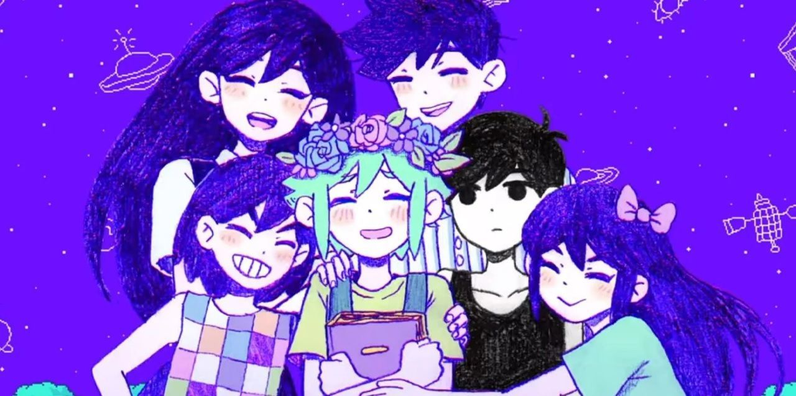

¿Que es OMORI?
Omori es un juego de terror psicológico surrealista. Debes viajar entre dos mundos, ambos acogedores y aterradores, para descubrir una verdad olvidada. El videojuego explora temas como la ansiedad, la depresión y el trauma.
Puedes ver el trailer oficial en: Sitio Web Oficial
Personajes relevantes
Estos son los compañeros de aventura
- Sunny(Omori): Es el protoagonista, hermano menor de Mari. En el HEADSPACE, es un chico deprimido y cohibido. En el mundo real es serio y callado.
- Mari: Es la hermana mayor de Sunny y novia de Hero. Tanto en el HEADSPACE como en el mundo real es una chica colaborativa, diligente y perfeccionista.
- Basil: Es el mejor amigo de Sunny. En el HEADSPACE se muestra como un chico timido y amable. En el mundo real es alguien ansioso y paranoico.
- Aubrey: Es la pretendiente de Sunny. En el HEADSPACE es alegre, torpe y carismática. En el mundo real es madura, seria e intimidante.
- Kel: Es el hermano menor de Hero. En el HEADSPACE es atlético, peleador y enojón. En el mundo real es competitivo, deportista y atento con sus compañeros.
- Hero: Es el hermano mayor de Kel y novio de Mari. En el HEADSPACE es mediador, pacífico y tranquilo. En el mundo real es sereno e indeciso.